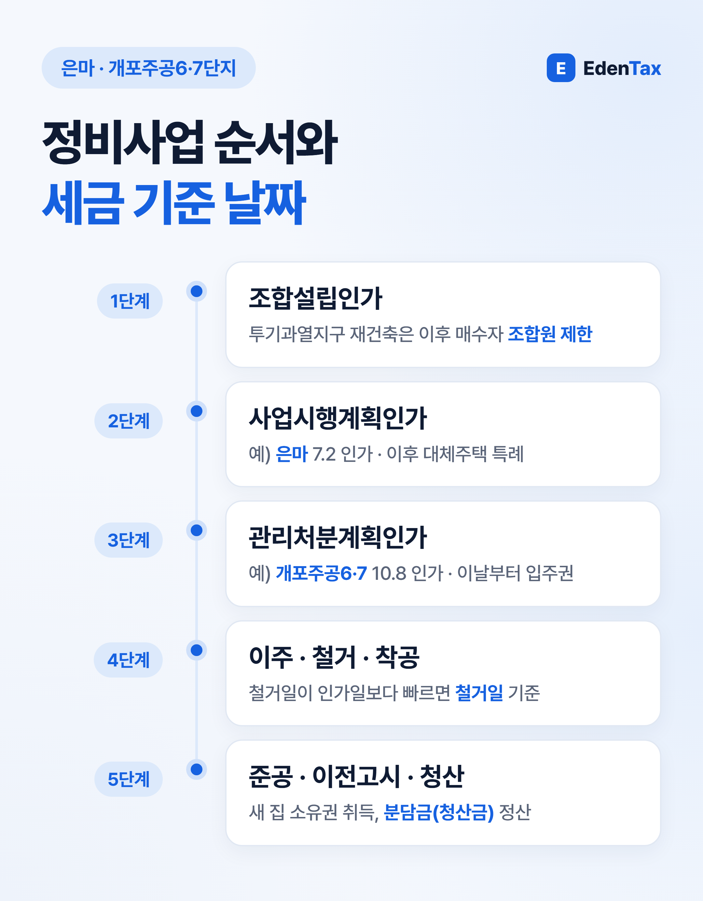
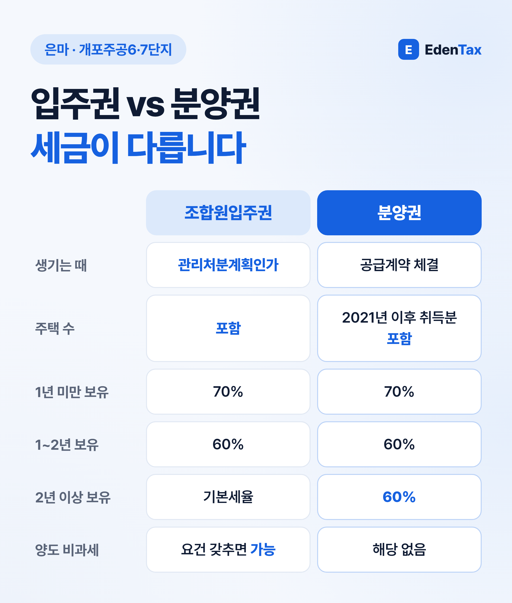
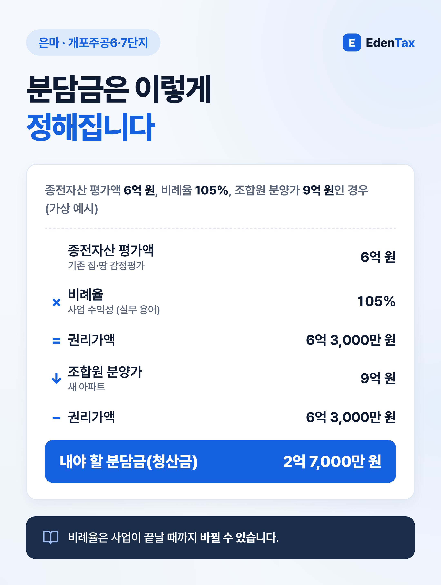

재개발·재건축 구역에 집이 있거나 매수를 검토 중이라면, 세금은 사업 단계에 따라 달라진다는 점부터 기억해 두세요. 같은 집이라도 관리처분계획인가 전에는 '주택', 인가 후에는 '조합원입주권'으로 취급되고, 비과세·공제·세율 판단이 모두 그 날짜를 기준으로 움직입니다. 올해 강남구에서 인가가 난 은마아파트와 개포주공6·7단지를 예로 단계별로 살펴보겠습니다.
은마와 개포주공6·7단지, 세법상 위치가 다릅니다
강남구 발표(2026년 7월 2일, 10월 13일)에 따르면 두 단지는 서로 다른 인가 단계를 밟았습니다. 아래 표는 구청 발표 사실만 옮긴 것으로, 시세나 투자 판단과는 관계가 없습니다.
| 단지 | 인가 내용 | 인가일 | 세금에서 의미 |
|---|---|---|---|
| 은마아파트 (대치동, 계획 5,850세대) | 사업시행계획인가 | 2026.7.2 | 아직 '주택'. 이후 취득한 공사기간 거주용 집은 대체주택 특례 검토 대상 |
| 개포주공6·7단지 (개포동, 계획 2,698세대) | 관리처분계획인가 | 2026.10.8 | 인가일부터 '조합원입주권'. 비과세·주택 수를 입주권 기준으로 판단 |
조합 계획상 은마아파트는 관리처분계획 수립·인가와 이주를 거쳐 2028년 착공을, 개포주공6·7단지는 2027년 2월 이주 시작을 목표로 하고 있습니다. 일정은 바뀔 수 있으니 조합 공지를 함께 확인하세요.
한 문장으로 보는 핵심 용어
| 용어 | 뜻 | 세금과의 관계 |
|---|---|---|
| 재개발 | 정비기반시설이 열악하고 노후 건축물이 밀집한 지역의 정비사업 | 토지·건축물 소유자 등 전원이 조합원 |
| 재건축 | 정비기반시설은 양호하나 노후 공동주택이 밀집한 지역의 정비사업 | 사업에 동의한 소유자만 조합원 |
| 관리처분계획인가 | 누가 어떤 집을 얼마에 받는지 확정하는 인가 | 이날부터 기존 집이 조합원입주권 |
| 종전자산 평가액 | 기존 집·땅의 감정평가액 | 입주권 양도차익 계산의 기준 금액 |
| 청산금(분담금) | 새 집 분양가와 내 권리가액의 차액 | 낸 금액은 양도차익 계산 시 차감 |
| 현금청산 | 집 대신 돈으로 보상받는 것 | 새 아파트를 받지 못함 |
비례율과 권리가액은 실무에서 쓰는 계산 방식입니다. 비례율은 (종후자산 총평가액 − 총사업비) ÷ 종전자산 총평가액이고, 권리가액은 내 종전자산 평가액 × 비례율입니다. 비례율은 사업비와 분양 수입에 따라 끝까지 바뀔 수 있습니다.

매수 전에 확인할 것: 조합원이 될 수 있는 집인가
투기과열지구에서는 재건축은 조합설립인가 후, 재개발은 관리처분계획인가 후 사들인 사람은 원칙적으로 조합원이 될 수 없습니다(도시정비법 제39조 제2항). 이 경우 새 아파트 대신 손실보상(현금청산)을 받게 됩니다. 상속·이혼으로 받은 경우는 제한 대상이 아니고, 1세대 1주택자가 10년 이상 소유하고 5년 이상 거주한 집을 파는 경우 등 예외가 있습니다.
지금은 서울 25개 구 전체와 경기 15곳(수원·성남 등 12곳, 2026년 7월 1일 추가된 화성 동탄구·용인 기흥구·구리시)이 투기과열지구입니다. 정부는 10·15 대책 자료에서 지정 공고일 당시 이미 조합설립인가가 난 재건축 구역, 관리처분계획인가가 난 재개발 구역부터 지위 양도가 제한된다고 안내했습니다.
입주권과 분양권, 세법에서는 어떻게 다른가

- 주택 수: 입주권은 주택 수에 포함되고, 분양권은 2021년 1월 1일 이후 취득분부터 포함됩니다. 그래서 입주권이나 분양권을 가진 상태에서 다른 집을 팔면 원칙적으로 1세대 1주택 비과세를 받을 수 없습니다(소득세법 제89조 제2항).
- 단기 세율: 입주권은 1년 미만 70%, 2년 미만 60%이고 그 뒤로는 기본세율입니다. 분양권은 1년 미만 70%, 1년 이상은 보유기간과 관계없이 60%입니다(소득세법 제104조 제1항).
- 비과세: 입주권은 요건을 갖추면 양도 비과세가 가능하지만, 분양권 양도에는 이런 비과세 규정이 없습니다.
입주권 비과세, 세 가지 경우로 정리
1. 입주권만 1개 있는 경우 관리처분계획인가일(그 전에 철거되면 철거일) 현재 기존 집이 1세대 1주택 비과세 요건을 갖췄고, 팔 때 다른 주택이나 분양권이 없어야 합니다.
2. 입주권 1개와 집 1채가 있는 경우 그 집을 산 날부터 3년 안에 입주권을 팔면 비과세 대상이 될 수 있습니다(소득세법 제89조 제1항 제4호). 두 경우 모두 양도가액 12억 원 초과분은 과세됩니다.
3. 공사 기간에 살 집(대체주택)을 산 경우 사업시행계획인가일 이후 취득해 1년 이상 거주하고, 새 집 완공 후 3년 안에 세대 전원이 이사해 1년 이상 살아야 합니다. 대체주택은 완공 전이나 완공 후 3년 안에 팔아야 비과세 특례를 받을 수 있습니다(소득세법 시행령 제156조의2 제5항).
팔 때 계산은 이렇게 나뉩니다
원조합원이 입주권을 팔면 양도차익을 관리처분계획인가 전 부분(기존 집 평가액 − 당초 취득가액)과 인가 후 부분(양도가액 − 평가액 − 낸 청산금)으로 나눠 계산합니다(소득세법 시행령 제166조). 장기보유특별공제는 인가 전 부분에만 적용됩니다(소득세법 제95조 제2항). 그래서 평가액 통지서와 청산금 납부 영수증이 계산의 핵심 증빙이 됩니다.

취득세·재산세도 단계마다 달라집니다
| 경우 | 취득세 | 근거 |
|---|---|---|
| 원조합원이 새 아파트를 받을 때 | 건축물은 원시취득으로 보아 2.8% | 지방세법 제7조 제16항, 제11조 제1항 |
| 철거 후 입주권을 산 승계조합원 | 토지 취득으로 보아 4% (부가세 포함 4.6%) | 지방세법 제11조 제1항 제7호 |
| 다른 집을 살 때 주택 수 | 입주권은 철거 뒤에도 주택 수에 포함 | 지방세법 제13조의3 |
재산세는 매년 6월 1일 현재 상태로 과세합니다. 그날 집이 이미 철거되어 있다면 주택이 아니라 토지로 재산세가 나옵니다(지방세법 제114조, 제106조).
세무사 한마디
"입주권도 결국 집이니 1주택이면 비과세 아닌가요?"라는 질문을 자주 받습니다. 입주권 비과세는 파는 날이 아니라 관리처분계획인가일을 기준으로 기존 집의 요건부터 봅니다. 사고팔 계획이 있다면 계약 전에 날짜부터 확인하시길 권합니다.
— 정재욱 세무사
에덴택스는 국세청 출신 세무사가 양도·상속·증여·취득까지 부동산 세금 전반을 전문으로 상담합니다. 인가 소식을 들으셨다면 관리처분계획 안내문과 기존 집 취득 서류를 챙겨 지금 단계에서 세금을 점검해 보세요.
※ 2026년 10월 법령과 강남구 발표 자료 기준의 일반 안내이며, 특정 단지의 매수·매도를 권하는 글이 아닙니다.